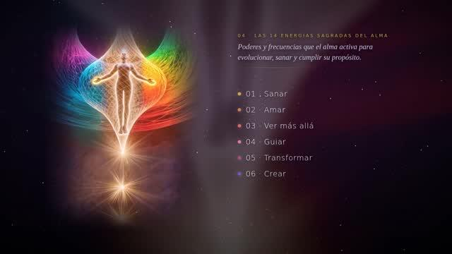
El código sagrado del alma
5:17 · 528 Hz
Cromosomas, partículas del universo y las 14 energías. El recorrido completo: de la célula al universo y de vuelta.
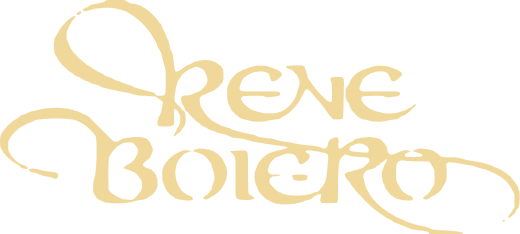
Sabiduría del alma
Costa Rica · 28, 29 y 30 de agosto de 2026
Los 14 colores · tocá uno
Los mismos que proyectamos en la sala, cada uno con su frecuencia. Tocá uno y se reproduce acá mismo.
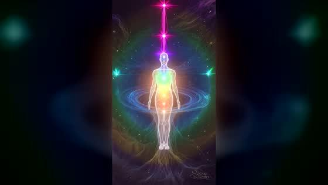
Y los cuatro de las láminas

5:17 · 528 Hz
Cromosomas, partículas del universo y las 14 energías. El recorrido completo: de la célula al universo y de vuelta.
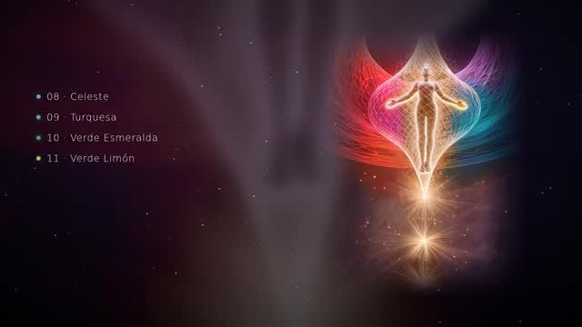
4:21 · 741 Hz
Las siete capas que te rodean, la profundidad del campo y lo que tus pensamientos le hacen.
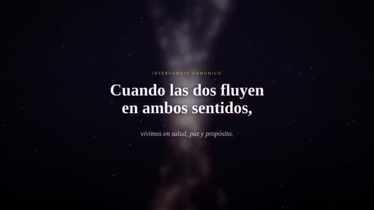
5:20 · 639 Hz
El intercambio entre el Cielo y la Tierra, y la práctica de siete pasos para sostenerlo.
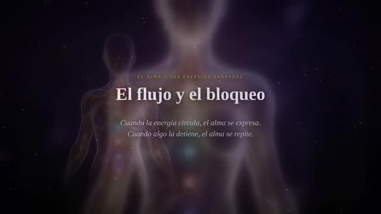
3:32 · 396 Hz
Cómo una herida no procesada bloquea la energía y qué hace falta para que vuelva a pasar.
Cada video tiene su propia frecuencia. No es música de fondo elegida al azar: es la nota que la tradición asocia a lo que ese video cuenta.
Es la frecuencia de la raíz, la que la tradición asocia a soltar lo que quedó trabado. Sobre el final, cuando el video pasa del bloqueo al flujo, la música cruza a 417 Hz, la que facilita el cambio.
La frecuencia del corazón, que es justamente donde se encuentran la energía del Cielo y la de la Tierra. Debajo late muy suave la resonancia Schumann, 7,83 Hz: el pulso de la Tierra.
La frecuencia de la garganta y de la expresión. La tradición la usa para despejar lo que enturbia el campo y sostener los límites propios.
La más conocida de las nueve. Se la llama «la frecuencia del ADN», y el video habla literalmente de cromosomas y de la información que te construye.
La frecuencia de la corona, la que cierra la escala. Acompaña al video que va del pacto entre dos almas a la rueda que vuelve a empezar.
Estas nueve frecuencias, llamadas solfeggio, se popularizaron a partir del trabajo de Joseph Puleo en los años noventa, sobre el Libro de los Números. Las sílabas —ut, re, mi, fa, sol, la— vienen del himno medieval de Guido de Arezzo; la asignación en hertz es moderna. Lo contamos así para que sepas de dónde viene cada cosa: lo que importa acá es la experiencia de escucharlas, no una afirmación histórica.
Las 22 láminas del taller, agrupadas en cinco constelaciones. Tocá una y ampliala con los dedos hasta leer la letra chica.
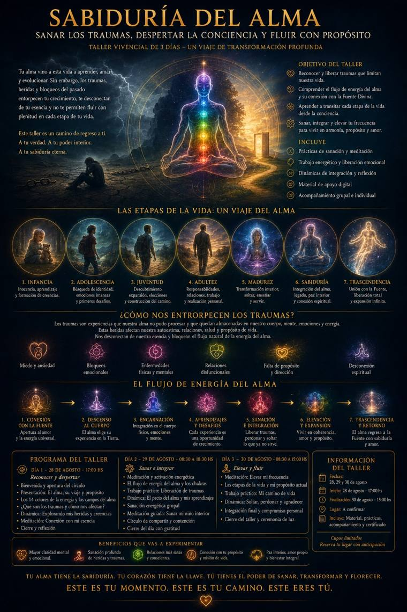
El mapa de los tres días: el objetivo del taller, las etapas de la vida del alma, cómo entramos en trauma y el flujo de energía. Todo en una lámina.
Abrir el atlas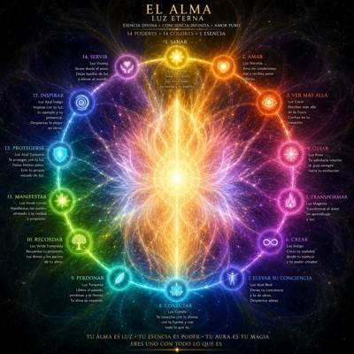
I Los 14 poderesLos catorce colores, la rueda y la grilla completa.6 láminas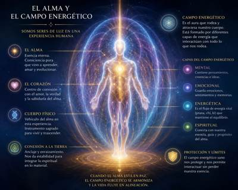
II El campo energéticoLas capas, la armadura de luz y el control mental.4 láminas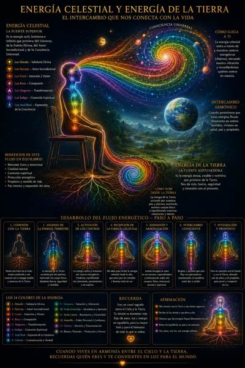
III El flujo de energíaEl Cielo, la Tierra y los siete pasos.2 láminas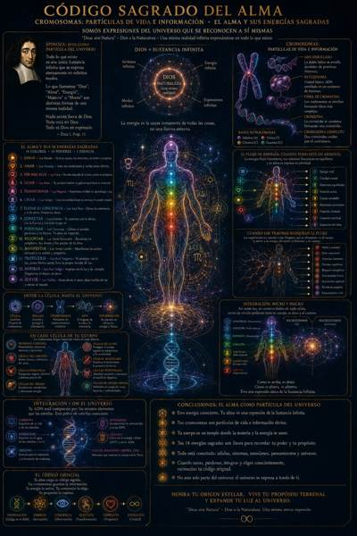
IV El código sagradoCromosomas, Spinoza y la anatomía del alma.7 láminas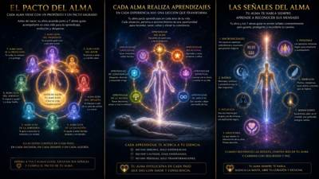
V El viaje y el pactoEl pacto, los aprendizajes y las señales.2 láminasCatorce frecuencias de luz. Cada una con un color, un poder y una tarea.
Sabiduría divina. Sana tu cuerpo, tus emociones, tu mente y tu espíritu.
Amor incondicional. Ama sin condiciones y recibe amor infinito.
Intuición y visión. Percibe más allá de lo físico, confía en tu intuición.
Compasión. Tu sabiduría interior te guía siempre hacia tu evolución.
Transformación. Convierte el dolor en aprendizaje y en luz.
Conexión espiritual. Creas tu realidad desde tu esencia y tu poder creador.
Expansión de la conciencia. Elevas la tuya y la de otros. Despiertas almas.
Comunicación y verdad. Te conectas con lo divino, con la Fuente y con todo lo que es.
Sanación y liberación. Liberas el pasado, perdonas y te liberas. Tu alma se expande.
Abundancia y sanación. Recuerdas tu propósito, tus dones y los pactos de tu alma.
Renovación y creatividad. Manifiestas tus sueños alineado a tu verdad y propósito.
Poder personal y confianza. Te proteges con luz, pones límites sanos. Sos tu propio escudo.
Servicio y transmutación. Inspiras con tu luz y tu ejemplo. Despertás lo mejor en otros.
Protección y pureza. Servís desde el amor, dejás huellas de luz y elevás al mundo.
Escribí sin corregirte. No es un examen: es un mapa.
Pregunta 01 de 04
El hecho, sin adornos. Lo que pasó, no lo que significó.
Pregunta 02 de 04
La emoción de aquel momento, no la de hoy.
Pregunta 03 de 04
La conclusión que sacaste sobre vos, sobre los demás o sobre la vida.
Pregunta 04 de 04
El patrón. Lo que seguís haciendo para no volver a sentir aquello.
Esto es tuyo. Lo que escribas se guarda solo en este teléfono. Nadie más lo ve, ni siquiera nosotros.
Diez minutos. De pie o sentado, los pies apoyados. Leé cada paso y quedate ahí hasta sentirlo.
Siento mis pies en el suelo, respiro profundo y me conecto con la energía estable y amorosa de la Tierra.
La energía de la Tierra asciende por mis piernas, nutriendo mi cuerpo, dándome fuerza, seguridad y vitalidad.
La energía activa y armoniza mis centros energéticos, equilibrando mis emociones, pensamientos y mi espíritu.
Me abro a recibir la energía celestial desde lo alto, que entra por mi coronilla e ilumina todo mi ser.
Ambas energías se unen en mi corazón, expandiéndose y armonizando todos mis cuerpos.
Respiro y permito que este flujo sea permanente, manteniendo el equilibrio entre dar y recibir.
Vivo en conexión con la Fuente y con la Tierra, alineado con mi alma y mi propósito, para servir y compartir mi luz.
Tres días dejan algo. Contanos qué te llevás: a René le sirve para seguir puliendo esto, y a quien venga después, para animarse.
Cuatro caminos escritos a lo largo de cuarenta años de trabajo con el alma.
Deslizá para ver los cuatro
Terapeuta del alma · Médium · Conferencista
Instructor de meditación y yoga · Investigador y escritor
Más de cuarenta años dedicados a explorar la conciencia, en más de treinta países.